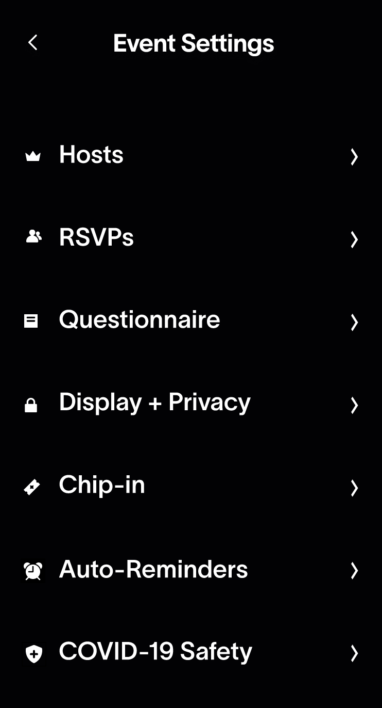
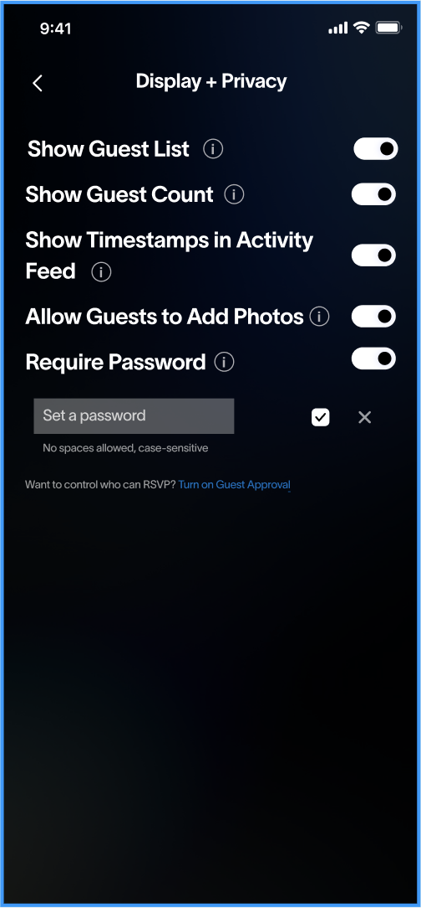
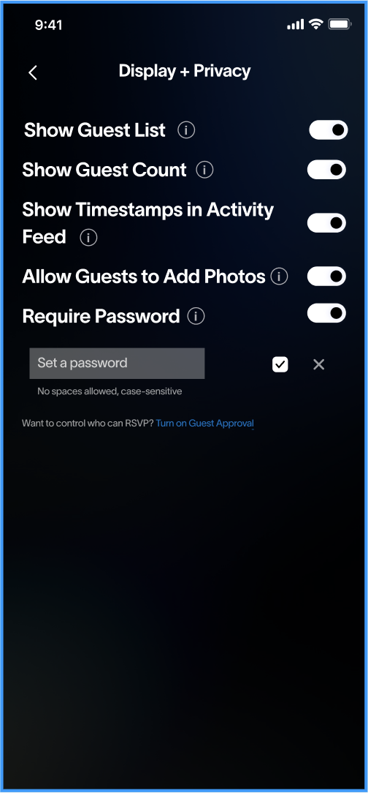
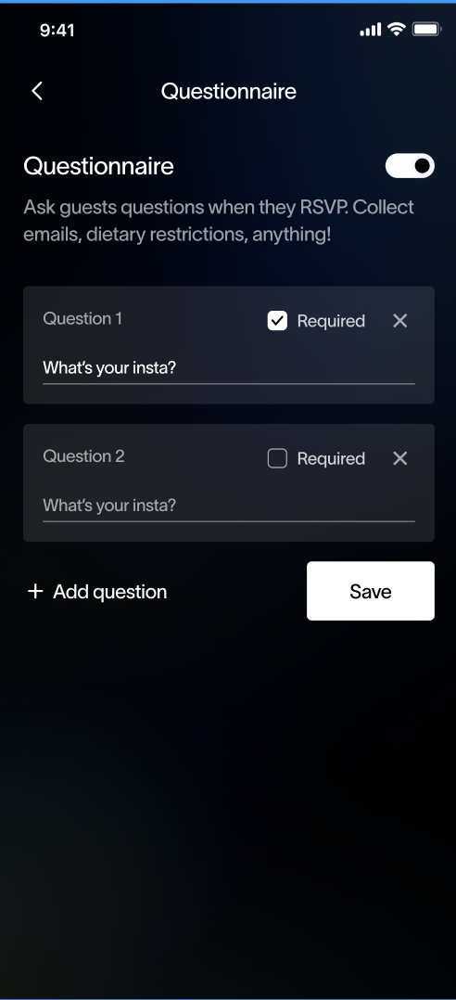
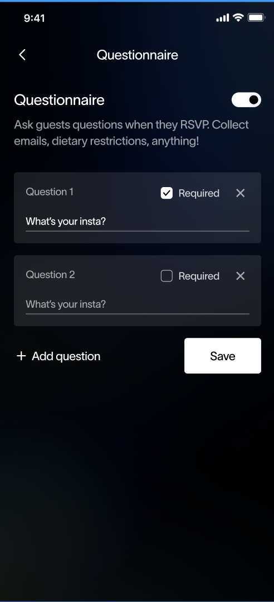

Partiful Settings
Overview
Partiful is a website and app that allows users to create event pages. Hosts can invite friends and friends-of-friends when they don't have a phone number or socials. Event pages build hype around the party, allowing guests and hosts to interact with each other. The company focuses on simplifying the cultivation of real-world friendships.
Partiful Settings
For this project, a team of three other designers and I worked on a redesign for Partiful. Partiful asked us to reimagine the settings of their mobile app. Despite having helpful settings, Partiful noticed that users were not utilizing the settings to their full extent or were even aware of the existence of many of the settings. The problem statement Partiful gave to us was: “How might we make event settings more prominent and easier to navigate for hosts?” This was the underlying question we kept in mind throughout this project. The end goal was to create a high-fidelity prototype in Figma of our redesigned Event Settings page that would enhance the user experience of navigating the settings.
My team consisted of fellow Brown University students Anastasio Ortiz, Croline Hwang, and Sandra Sandoval. Throughout the process, we were in communication with Ally Klionsky, Partiful Product Designer, and Grace Zhang, Partiful Design Engineer.
Here are some images of the current Partiful mobile settings that my team was assigned to redesign:
Process
Early Designs
Some issues we noticed with the current settings page were that some settings sections were hidden by horizontal-scrolling, the instructions were very wordy, and some information was redundant.
Before focusing on the specific aspects of the application settings that we were going to tackle, we first each sketched 2 flows of how we envisioned the feauture could be improved.
Low Fidelity Wireframe
We explored a few options for the Settings page through our various sketches that showcased several different ways in which we could address these issues. Personally, I noticed that the current mobile settings page has a lot of unnecessary whitespace, so I thought about putting all the settings on one long, scrollable page, where each section comes one after the other. Users would have been able to skip to a section they were looking for either by using the same horizontal scrolling menu that already exists or through a drop down menu. However, we ultimately decided against vertical scrolling because we thought it would only make the overwhelming nature of the settings worse.
My other sketch idea was to mimic the Apple Settings page. In the end, we decided to go with this design. We realized that we wanted to prioritize ease of use for the users, and a setting page with this style allowed for familiarity. Also, since we noticed that some of the info about each setting was wordy and tended to distract and confuse users, we decided to add an info button that, when pressed, displays information about that specific setting.
For this mockup, I was in charge of working on the "Event Settings" menu. I tried to focus on simplicity with easily-understood icons.
Here is a link to link to our Figma low-fi mockup.
Feedback
We recieved the following feedback from fellow students who would be potential users of Partiful:
- Many of them liked the idea of the information text expanding underneath, which would move all the text down.
- They pointed out that if our users needed info on one of the settings, they might need info on all of them, which would require them to do a lot of clicking.
- They suggested we make our font bigger and more readable.
We recoeved the following feedback from designers at Partiful:
- They worried that clicking into more icons may get annoying if users had to keep doing it for each setting.
- They suggested that we add spacing and reduce the boldness to make sure things are legible and easy to follow.
- They also felt the design of the info buttons was unclear.
Based on this feedback, we decided to implement the following changes:
- We made the font size more readable
- We designed one big button that would expand the info for all the settings on the page.
- We made the information expand underneath each setting
Style Guide
After revising our low-fi mockup, we created our own style guide for use in our high-fi mockup. This style guide brought together elements in the style guide Partiful gave us and our own designs
Redesigned Settings
High-Fidelity Prototype
Based on the feedback we gained, our group created interactive high-fidelity mockups of every single page and button on the Settings page. My role in the creation of the high fidelity prototype, I improved on the "Event Settings" design while also designing the Chip-In and Hosts page.


For our complete hi-fi mockup, see this Figma link.
Post-Design Founder Feedback
After sending the Partiful designers our Figma, we had the pleasure of meeting with them to recieve in person feedback and have a discussion about how Partiful can improve their settings. They were very happy with our decicion to create a settings page with was more familiar to users. Additionally, they agreed that the original design had an overwhelming amount of text and supported our decision to hide the excess text with the information button.
One piece of feedback we received was that when a user pressed the information button, it was not clear whether the button was “on” or “off." They also felt that our design needed to be more "playful," something that is really important to Partiful's brand.
Overall, we had a great experience meeting with the designers from Partiful, who were kind, supportive, and knowledgeable. It was fascinating to hear about their experiences at a startup. For example, they remarked that they have been thinking about how to improve the Event Settings for a while but are currently unable to due to resource constraints.
Further Improvements
The feedback from the designers really resonated with us, so we decided to revise our designs with some of their suggestions in mind. We made the icons more colorful on the Event Settings page and created a highlighting feature for the info button that makes it clear if the settings are "showing" or "hiding."
Learnings
As a member of the demographic Partiful caters to, I was excited for the chance to work with actual designers from Partiful on this project. It was an interesting experience designing for an existing company because I always had to keep in mind the goal and image of the company. For instance, Partiful aims to make the event planning process as quick and fun as possible, so I had to come up with designs that stayed true to those principles.
Additionally, I found that much of this project consisted of balancing the critique and feedback I received with our own visions, which is a challenging but rewarding experience. This project provided an opportunity to gain insight into the process a startup might go through when designing an interface. I had a great time watching how our prototype evolved at different stages and am proud of the final product.
Throughout this project, I gained skills in:
- Figma mockups
- applying critique
- using existing company style guides
- explaining my designs to startup designers through a well-documented process
- collaborating with a group of other designers to create a cohesive design


 

 
